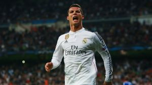

Ronaldo heeft tot nu toe bij 4 verschillende voetbalclubs gespeeld. De vier zijn op chronologische volgorde van begin naar eind: Sporting Lissabon, Manchester United, Real Madrid en Juventus FC. Op deze pagina kan je informatie vinden over de tijd die Cristiano bij elk van deze clubs heeft doorgebracht. Ook staat er bij elke club een plaatje van hoe Ronaldo er in die tijd uitzag.
Sporting Lissabon (2002 - 2003)
Over de tijd van Ronaldo bij Sporting is niet veel bekend. Toen hij 12 jaar oud was verhuisde hij van het eiland waarop hij geboren was, Madeira, naar het vasteland. Zijn ouders kwamen niet mee, hij was dus op eigenlijk op zichzelf aangewezen. Wel trok hij heel goed op met zijn team, het werd een goede groep vrienden. Hij kwam toen in de jeugdopleiding van Sporting. Hij speelde voor Sporting onder 16, onder 17, onder 18 en uiteindelijk zelfs in het eerste. De trainers hadden nog nooit zo'n snelle ontwikkeling gezien. Ronaldo was pas 17 jaar oud toen hij in oktober 2002 zijn eerste officiéle wedstrijd speelde voor deze club. Hij liet een goede eerste indruk achter, toen hij zijn officiéle debuut maakte scoorde hij namelijk gelijk 2 keer. Tijdens zijn eerste jaar als prof speelde hij nog 30 wedstrijden. In deze 30 wedstrijden maakte hij nog 3 doelpunten. Maar er stond hem nog veel meer te wachten...
Manchester United (2003 - 2009)
Na zijn eerste jaar als professionele voetballer bij Sporting verliet Ronaldo Portugal en ging bij Manchester United spelen. In de zomer van 2003 speelde Sporting een wedstrijd tegen Manchester, de Portugezen wonnen met 3-1. Het Engelse elftal, onder leiding van Alex Ferguson, was zo onder de indruk van de voetbalkwaliteiten van Cristiano dat ze besloten hem te kopen. Ronaldo maakte zijn debuut op 16 augustus. Al in het seizoen 2006/2007 ontwikkelde hij zich één van de beste voetballers van de wereld. In dit seizoen werd hij zelfs 2 keer achter elkaar verkozen tot speler van de maand! Ook was hij in dit seizoen wereldwijd de best betaalde voetballer, met een salaris van 120.000 pond per maand. Op 22 april 2007 werd hij op 22-jarige leeftijd uitgeroepen tot speler van het jaar. 1 jaar later viel hij weer in de prijzen, hij was topscorer van de Premier League. In 2008 won hij met Manchester nog de Premier League en de Champions League. Verder werd hij benoemd tot Europees- en Wereldvoetballer van het jaar.
Real Madrid (2009 - 2018)
Bij Real Madrid werd Cristiano echt bekend, de meeste kennen hem nu doordat hij 9 jaar bij deze club heeft gespeeld. In juni 2009 kocht Real Madrid hem voor een recordbedrag van 94 miljoen euro. In zijn eerste jaar bij deze Spaanse heeft hij geen prijzen gehaald. In het seizoen 2010/2011 scoorde hij de meeste doelpunten in één seizoen: 40. Verder maakte hij in 2011 zijn snelste hattrick ooit, hij scoorde 3 keer in 15 minuten! in het seizoen 2011/2012 won hij weer de prijs voor de meeste doelpunten in 1 seizoen, hij scoorde namelijk 46 keer. Ook in 2014/2015 was dit weer het geval, alleen scoorde hij in dit seizoen 48 keer! Op 18 april 2017 was hij de eerste voetballer ooit die 100 keer scoorde in de Champions League. Ook in het seizoen 16/17 werd hij opgenomen in het sterrenteam van de UEFA. Ronaldo haalde record na record en prijs na prijs bij Real, meer over zijn gewonnen prijzen vind je onder het kopje 'Prijzen'.
Juventus FC (2018 - heden)
Omdat Ronaldo pas sinds kort bij Juventus speelt, valt er helaas niet heel veel over hem bij deze club te vertellen. In juli 2018 kocht Juventus hem voor een bedrag van 105 miljoen euro. Heel Italië stond te popelen om de 'grote' Ronaldo in hun land te zien spelen. Zijn debuut was op 18 augustus. Vier weken later maakte hij zijn 400e competitiedoelpunt hier, maar moest nog wel even op gang komen. In het eerste seizoen bij Juventus, maakte hij 21 doelpunten in de competitie. In al zijn jaren bij Real Madrid lag dit aantal niet zo laag.